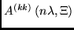
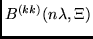
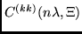
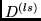
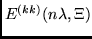
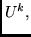
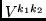
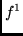
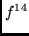

According to the approach P2 [4], a general expression of a submatrix element for any two-particle operator between functions with u open shells, can be written as follows:
So, to calculate the spin-angular part of a submatrix element of this type, one has to obtain:
Some important points to note are the following:
1. The recoupling matrices
 in our approach are much simpler than
in other known approaches. We have obtained their analytical expressions in
terms of just 6j- and 9j-coefficients. That is why we choose a special
form of operator in second quantization, where second quantization
operators
acting upon the same shell are tensorially coupled together.
in our approach are much simpler than
in other known approaches. We have obtained their analytical expressions in
terms of just 6j- and 9j-coefficients. That is why we choose a special
form of operator in second quantization, where second quantization
operators
acting upon the same shell are tensorially coupled together.
2. The tensorial part of a two-particle operator is expressed in terms of (products of) operators of the type , , , , . Their explicit expressions are (2)-(6):
We obtain the submatrix elements of operator (2) by using straightforwardly the Wigner-Eckart theorem in quasispin space:
The value of a submatrix element of operator (3) is obtained by basing ourselves on (33), (34) in P1 [3]. In the other three cases (4), (5), (6) we obtain them by using (2.28) of Jucys and Savukynas [8]:
As is seen, by using this approach, the calculation of the angular parts of matrix elements between functions with u open shells ends up as a calculation of submatrix elements of tensors (2), (3) within single shell of equivalent electrons. As these completely reduced (reduced in the quasispin, orbital and spin spaces) submatrix elements do not depend on the occupation number of the shell, the tables for them are reduced considerably in comparison with the tables of analogous submatrix elements of tensorial quantities   (Jucys and Savukynas [8] or Cowan [9]) and the tables of fractional parentage coefficients (CFP). That is why the expressions obtained are very useful in practical calculations. This is extremely important for the f - subshell, where the number of CFPs for  -  equals 54408, whereas the number of RCFP, taking into account the transposition symmetry property of RCFP is only 14161 - of which only 3624 are nonzero.
We do not present details on obtaining phase factors  and
, since no
essential generalizations may be made here; those are possible only after
a particular operator is chosen (for more details see P2 [4],
P3 [5]).
and
, since no
essential generalizations may be made here; those are possible only after
a particular operator is chosen (for more details see P2 [4],
P3 [5]).